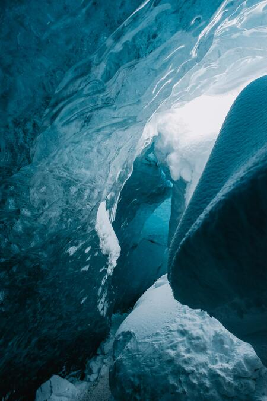

HOME
Joshua Tree
Fuji-Hakone-Izu
Vatnajokull
Contact Me
Vatnajokull

Vatnajokull was created in 2008 and is one of the largest national parks in Europe.
Vatnajokull is a large glacier that is thought to have formed over 1000 years ago.
Vatnajokull
The glacier is the largest in Europe. It actually covers some volcanoes in Iceland.